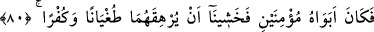

SABREDEMEDİĞİN
ŞEYLERİN İÇYÜZÜ
79. “Gemi var ya, o, denizde çalışan yoksul kimselerindi. Onu kusurlu kılmak
istedim. (Çünkü) onların arkasında, her (sağlam) gemiyi gasbetmekte olan bir kral
vardı.”
80. “Erkek çocuğa gelince, onun ana-babası, mümin kimselerdi. Bunun için
(çocuğun) onları azgınlık ve nankörlüğe boğmasından korktuk.”
81. (Devam etti:) “Böylece istedik ki, Rableri onun yerine kendilerine, ondan
daha temiz ve daha merhametlisini versin.”
82. “Duvara gelince, şehirde iki yetim çocuğun idi; altında da onlara ait bir hazine
vardı; babaları ise iyi bir kimse idi. Rabbin istedi ki, o iki çocuk güçlü çağlarına
erişsinler ve Rabbinden bir rahmet olarak hazinelerini çıkarsınlar. Ben bunları
kendiliğimden yapmadım. İşte, hakkında sabredemediğin şeylerin iç yüzü budur.”
Deldiğim “gemi var ya, o, denizde çalışan yoksul kimselerindi.” Hızır (a.s.)’ın
deldiği gemi zâlimlere karşı koymaya güçleri yetmeyen bazı zayıf ve yoksul kimselere
âitti. Bunlar on kardeştiler. Beşi el ve ayağı tutmayan kötürüm kimselerdi. Geçimlerini
kazanmak için o gemiyi ücretle çalıştırırlardı. İşin bütün kardeşlere nisbet edilmesi,
çoğunluğun dikkate alınması yoluyladır. Ya da vekillerin ameli müvekkillerin ameli
yerine geçtiği içindir.
Bil ki, şer’î ıstılahta fakir, nâmî (artıcı) olsun olmasın aslî ihtiyaçlarından fazla olarak
iki yüz dirhem gümüş veya bu kadar kıymette bir mala malik olmayan kimsedir. Miskin
ise hiç malı olmayana denir. Hanefîlerce sahih görüş bu iken Şâfiîler tam aksini
söylerler.